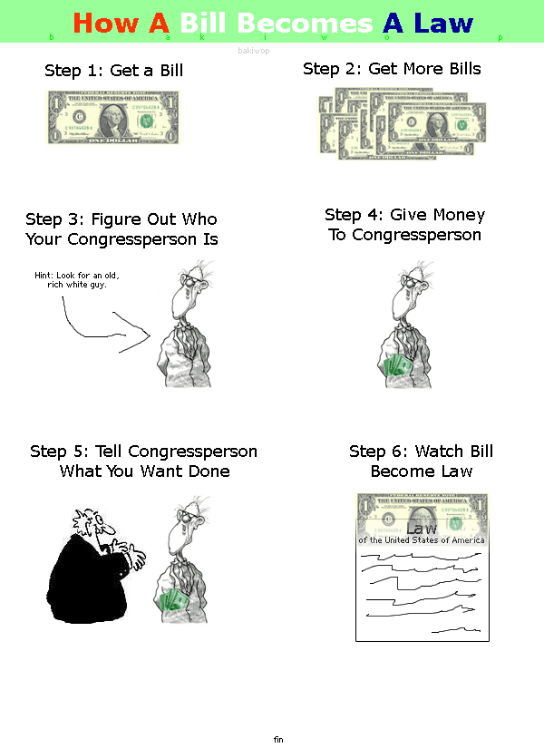

ope...a life / serial.13
She's Not There cover by Yonaka
Tsunami Warning for, basically, the entire coast of every continent on the Pacific Ocean due to the "8.8 magnitude temblor" in Russia's far east.
Because math is groovy, the U.S. Tsunami Warning System was able to predict how high the tsunami would be and when it would hit.
Evidently tsunamis can travel across the Pacific Ocean at 500mph. It still takes half a day or more for the tsunami to cross the Pacific.
Good advice is to stay off the beaches and above the "Leaving the Tsunami Zone" lines/waves painted on all the streets around here.
The prediction for Lincoln City was a tsunami of less than a foot to hit at 11:55pm PST. We decided to go to bed rather than head to a neighbor's on the cliffs overlooking the ocean to watch it.
Slowly gathering all my old site stuff I can find and putting it in the archivio.antico. A trip down memory lane.
A little preview from a couple decades ago:

The delight of getting your sense of smell back after days of being sick; the distress of it happening at the public library.
Sunday 03 August 2025
Miles ridden this week: 440. Rediscovering some paved(ish) back roads I haven't been on in years.
- - -
Hours writing: 0. Blech. Excuse du jour? Trying to get the archivio.antico sorted - will take a while.
- - -
Notable patron interactions from the previous week:
- - -
Interview with the public library in Flagstaff, AZ. Another cool place. Just like last week, still not sure about pay cut (only ~$25k/yr this time around) and what effect it would have on pension and potential retirement. The conundrum: do we settle for the pretty nifty life we have here and travel lots or possibly hurt our chances of retirement but move around every few years.
- - -
Stopped taking two of my four allergy shots a month ago. Starting to feel the negative effects of that decision. Fingers crossed things don't get too bad.
- - -
Father memory: We had a football game we'd play: make it across the big back yard (about 30 meters) in four passing plays, then three passing plays, then two passing plays, then in one passing play.
- - -
Snowflake memory: slow blinks.